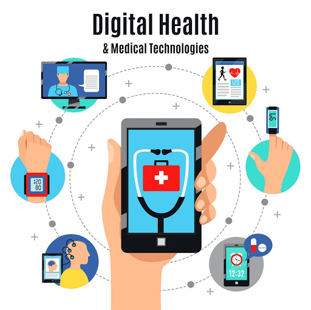

Digital health and medical technologies are transforming the way we approach healthcare. From wearable devices that monitor your heart rate to apps that help you manage chronic conditions, technology is putting control back into the hands of patients.
Devices like smartwatches, fitness trackers, and blood glucose monitors are empowering individuals to stay proactive about their health. These tools provide real-time data that can be shared with healthcare providers, improving communication and outcomes.
The rise of telemedicine allows doctors and patients to connect remotely, reducing the need for physical visits. Additionally, AI-powered apps can analyze health data to provide insights, while medication reminders ensure patients never miss a dose.
The future of digital health includes even more personalized care, integrating advanced sensors, and leveraging artificial intelligence to predict and prevent health issues. It’s an exciting time to be part of this revolution!
